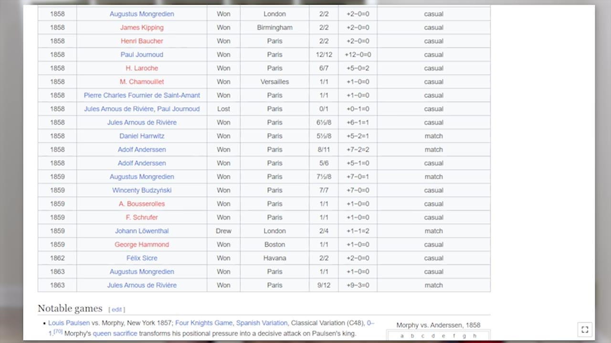
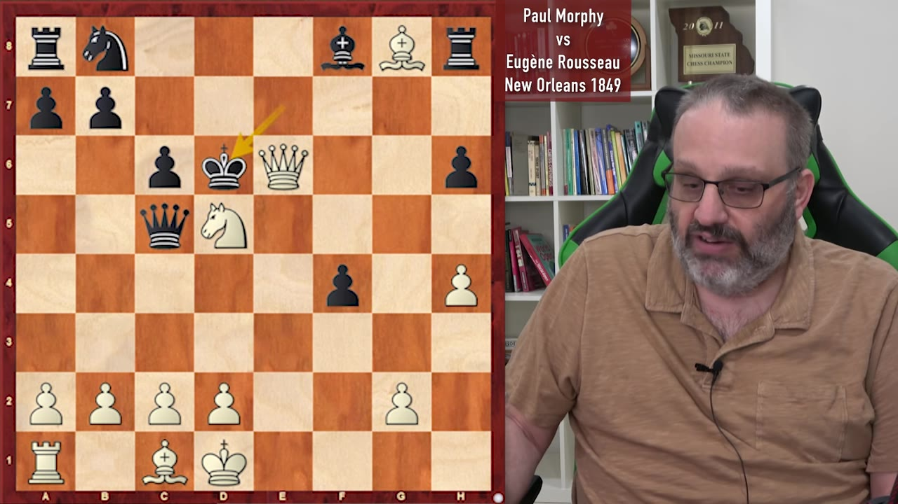
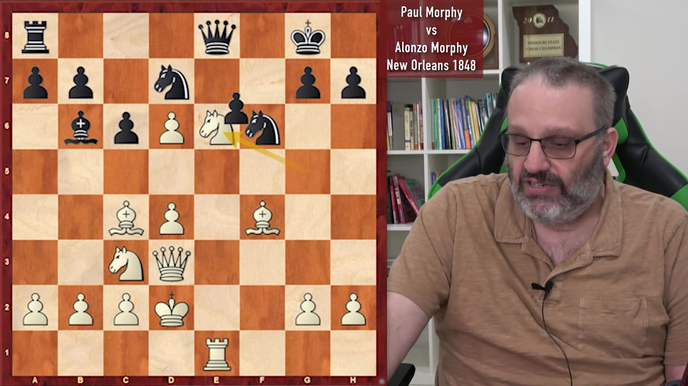
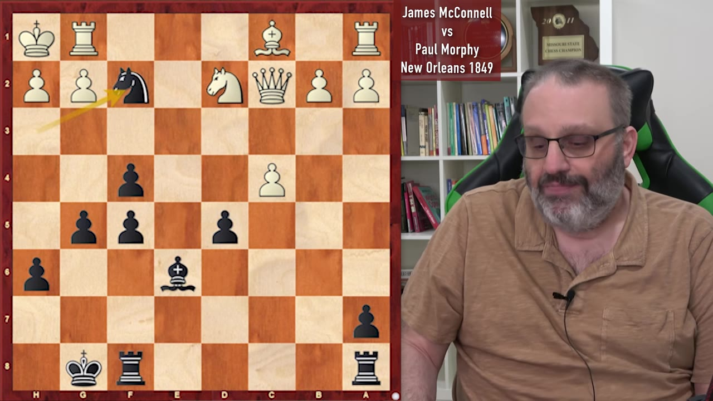
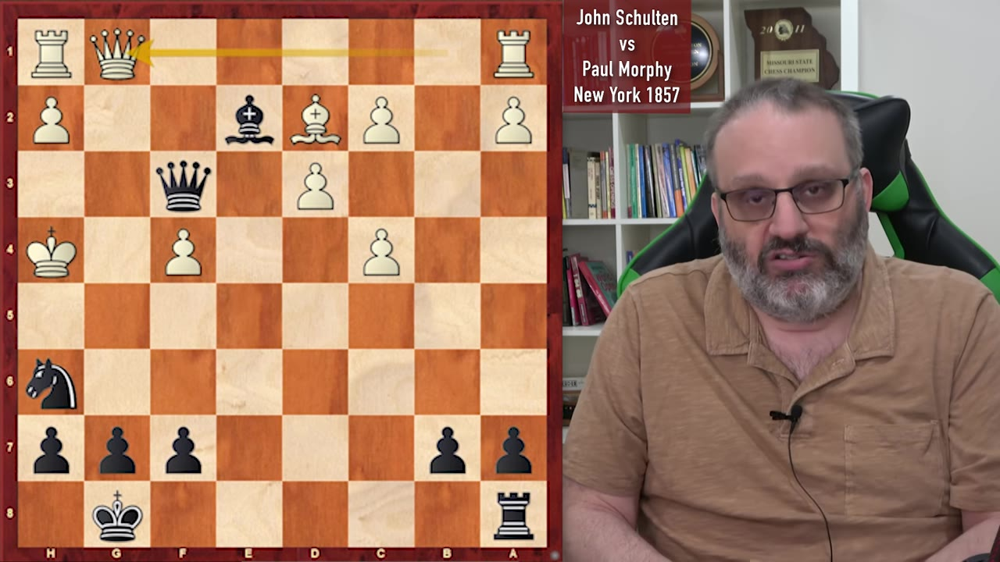

GM Ben Finegold opens a four-part Morphy series with four King's Gambit games — two with White, two with Black — and the argument that Morphy beat his contemporaries by a margin nobody else in history ever managed.
Watch on YouTubeFinegold opens a four-part Morphy series — each lecture a different theme, this one the King's Gambit — and leads with why Morphy is his pick for greatest of all time. Not by running the games through an engine move by move. By the gap between a player and the people he actually faced.

Imagine you lived in a world where everybody was 1200, and if somebody was 1350 they were clearly the best player in the world. Well, in this world that I'm inventing, Morphy was like 2200 and everybody was 1200. And I don't understand how that happened.— GM Ben Finegold
He grants that Fisher and Kasparov were clearly better than their contemporaries too — but Morphy was "more than clearly better." His one-on-one blemish for his whole career: a four-game match against Löwenthal that finished 2–2.
First game, King's Gambit, Morphy with White against Eugène Rousseau (New Orleans, 1849). After the most aggressive setup for Black, Morphy jumps his knight in deep and gives it up — he knew the piece sac was coming when he played it. Black grabs the material and spends the rest of the game shuffling only his king and queen while White pours pieces toward the black king.

Material was even most of the way through, but White had a queen, rook, bishop and knight developed while Black had only a queen out. When Rousseau pushed a pawn to attack the queen, Morphy found a forced win Finegold rates as a genuinely hard puzzle — a deflection that ends in mate.
His opponents couldn't handle the truth. Even before A Few Good Men.— GM Ben Finegold
The second White game is Morphy against his father, Alonzo Morphy — and Finegold insists Alonzo did not throw it. Bishop C4 instead of the knight, Black trots the queen out early to check, and then spends the opening making one-move threats that Morphy simply parries while finishing his development. Alonzo did better than Rousseau, at least: he got pieces out and castled before it collapsed.

Finegold flips the board: Morphy with Black against James McConnell (New Orleans, 1849), same King's Gambit. McConnell plays it like a quiet Italian — d3, c3 — after having sacrificed a pawn, which Finegold says you can't do. Morphy throws in a pawn of his own to gain time, builds a big center, and cements a knight on e4 while White's queenside never untangles.

They didn't have a lot of good internet service in the 1850s, so people didn't see these puzzles all the time. His opponent probably had never seen it before. You can't blame him — it's the 1850s, what do you want.— GM Ben Finegold
Last game, Morphy with Black against John Schulten (New York, 1857). Instead of accepting the gambit, Morphy declines with the Falkbeer Counter-Gambit — Finegold notes it's the line he himself usually plays. By move six Morphy is two pawns down on purpose, seizing the initiative, pinning pieces, and sacrificing the exchange to keep the bind. Then a forced sequence Finegold calls his own specialty: every White reply is the only legal move.

Finegold closes on the knock against Morphy — that his opponents defended badly — and turns it into the compliment. With no chess books, no internet, no tournaments to walk to, Morphy somehow calculated and played like a modern engine, decades ahead of the people across the board.
We stand on the shoulders of giants, and we learn from this.— GM Ben Finegold